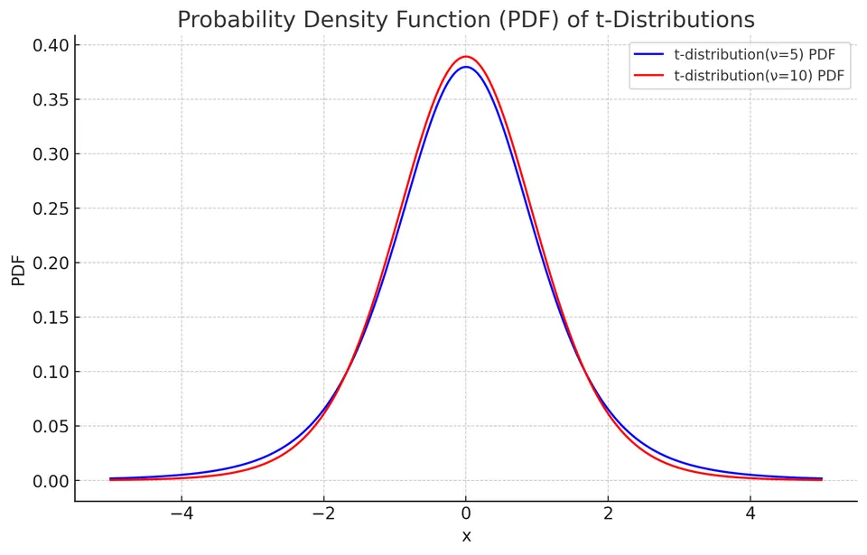
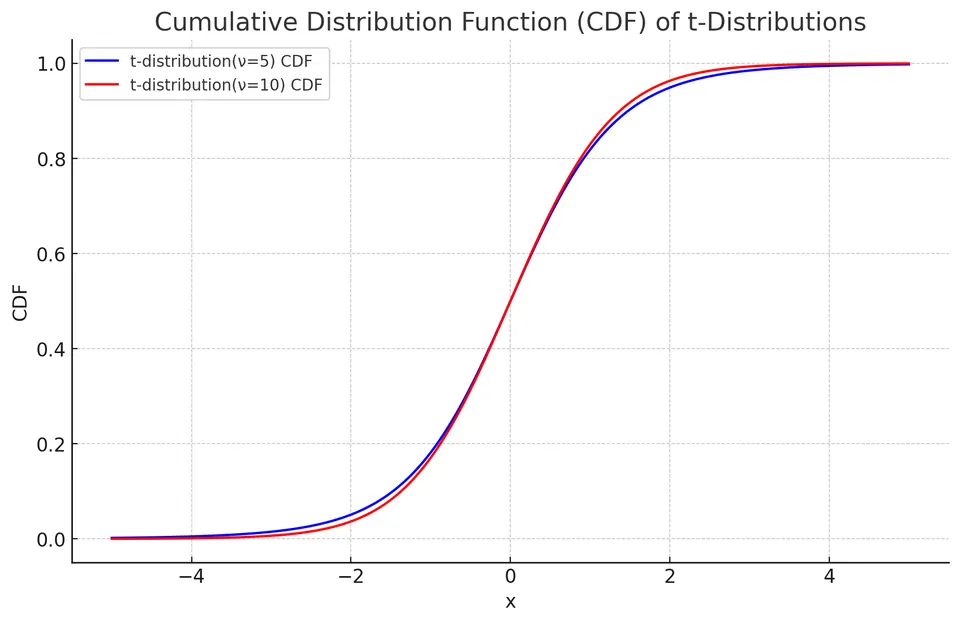

Student's t-Distribution (Continuous)
Student's t-distribution is a continuous probability distribution that arises when a normally distributed quantity is standardized using an estimated standard deviation rather than a known population standard deviation. Formally, if $Z\sim N(0,1)$ and $V\sim\chi^2(\nu)$ are independent, then $T=Z/\sqrt{V/\nu}\sim t(\nu)$. It has heavier tails than the normal distribution and approaches the normal distribution as its degrees of freedom increase. The t-distribution is denoted as $X \sim t(\nu)$, where $\nu$ is the number of degrees of freedom.
The density is defined for every positive $\nu$, including nonintegers. Integer values arise naturally from counts of independent residual directions; noninteger values can occur in an approximating reference law such as Welch's.
Why estimating a standard deviation creates heavier tails
For independent $N(\mu,\sigma^2)$ observations, the mean and sample variance are independent, and
Substituting these into the defining ratio yields $(\bar X-\mu)/(S/\sqrt n)\sim t(n-1)$. Occasionally $S$ underestimates $\sigma$, making the ratio unusually large in magnitude. This extra denominator uncertainty explains the heavier tails. With more degrees of freedom, $V/\nu$ concentrates near one and the t distribution approaches the standard normal.
The exact result requires the normal-sample construction and independence in the ratio. Dividing an arbitrary statistic by any estimated standard error does not automatically produce an exact t distribution.
A Complete One-Sample Calculation
Suppose ten independent normal measurements have sample mean 52 and sample standard deviation six. To assess the null mean $\mu_0=50$, use
$$ T=\frac{\bar X-\mu_0}{S/\sqrt n} =\frac{52-50}{6/\sqrt{10}} \approx1.0541. $$
Under the null, the reference is $t(9)$, giving a two-sided p-value of about 0.3193. The observed difference of two units is only about 1.05 estimated standard errors from the null value.
The 97.5% quantile of $t(9)$ is approximately 2.2622, so the matching 95% confidence interval is
$$ 52\pm2.2622\frac6{\sqrt{10}} \approx(47.7079,56.2921). $$
The interval contains 50, agreeing with the two-sided test at the 5% level. Replacing 2.2622 by 1.96 would give a narrower interval and discard the exact small-sample allowance for estimating $\sigma$. The standard deviation six describes individual measurements; $6/\sqrt{10}$ describes uncertainty in their mean.
Under repeated samples from the stated model, the interval procedure covers the fixed population mean 95% of the time. This is an assertion about the procedure's random endpoints, not that the realized data determine a probability distribution for the fixed mean without additional modeling.
Probability Density Function (PDF)
The PDF of a t-distribution is given by:
$$f(x) = \frac{\Gamma\left(\frac{\nu + 1}{2}\right)}{\sqrt{\nu \pi} \, \Gamma\left(\frac{\nu}{2}\right)} \left(1 + \frac{x^2}{\nu}\right)^{-\frac{\nu + 1}{2}}$$
where $\Gamma(\cdot)$ is the gamma function.

The Density Is a Mixture over Denominator Uncertainty
Conditional on $V=v$ in the defining ratio $T=Z/\sqrt{V/\nu}$, T is normal with variance $\nu/v$. Its conditional density is $\sqrt{v/\nu}\,\phi(t\sqrt{v/\nu})$. Averaging over the chi-square density gives
$$ f_T(t)=\int_0^\infty \sqrt{\frac v\nu}\, \phi\left(t\sqrt{\frac v\nu}\right) \frac{v^{\nu/2-1}e^{-v/2}}{2^{\nu/2}\Gamma(\nu/2)}\,dv. $$
Combining the powers of v leaves $v^{(\nu+1)/2-1}$, and the exponential becomes $e^{-v(1+t^2/\nu)/2}$. Evaluating this gamma integral gives the displayed t density. Thus the heavier tails arise by averaging normals with a random scale, rather than by arbitrarily altering the normal density.
When the denominator is unusually small, large absolute ratios become more likely. For example, the positive critical values for central 95% intervals are:
| Degrees of freedom | 1 | 5 | 10 | 30 | Normal limit |
|---|---|---|---|---|---|
| 97.5% quantile | 12.7062 | 2.5706 | 2.2281 | 2.0423 | 1.9600 |
The reduction is gradual and depends on the tail probability being used. A t variable is centered and scaled by its construction, but it does not have variance one: for $\nu>2$, its variance is $\nu/(\nu-2)$. A location-scale model $a+bT$ therefore has variance $b^2\nu/(\nu-2)$, not simply $b^2$. The NIST t-distribution reference describes its density and changing tail shape.
Cumulative Distribution Function (CDF)
The CDF of a t-distribution can be expressed in terms of the regularized incomplete beta function $I_x(a,b)$. For $t\ne0$,
$$ F(t)=1-\tfrac12 I_{\frac{\nu}{t^2+\nu}}\!\left(\tfrac{\nu}{2},\tfrac12\right)\quad (t>0), $$
and $F(-t)=1-F(t)$ by symmetry.
At $t=0$, symmetry gives $F(0)=1/2$. Negative quantiles are obtained by reflecting positive quantiles. The density's symmetry does not guarantee existence of a mean: when $\nu\leq1$, the positive and negative tail integrals fail to be absolutely integrable, so cancellation cannot define an ordinary expectation.

Expected Value and Variance
The expected value (mean) of a t-distribution is equal to 0 for $\nu > 1$:
$$E[X] = 0$$
The variance of a t-distribution is given by:
$$\text{Var}(X) = \begin{cases} \frac{\nu}{\nu - 2}, & \text{if}\ \nu > 2 \\ \infty, & \text{if}\ 1 < \nu \le 2 \\ \text{undefined}, & \text{if}\ \nu \le 1 \end{cases} $$
Moments
The moment generating function of a t-distribution does not exist in a neighborhood of zero because of its heavy tails. Moments that do exist can be computed from the density.
- First Moment (Mean):
$$E[X] = 0, \text{ for } \nu > 1$$
- Second Raw Moment:
$$E[X^2] = \frac{\nu}{\nu - 2}, \text{ for } \nu > 2$$
Because the mean is zero, the second raw moment equals the variance whenever $\nu > 2$.
Which Moments Exist?
For large absolute t, the density is proportional to $|t|^{-(\nu+1)}$. Multiplying it by $|t|^r$ gives a tail integral behaving like $\int^\infty t^{r-\nu-1}\,dt$, which is finite precisely when $r<\nu$. For $0\leq r<\nu$,
$$ E[|T|^r] =\nu^{r/2} \frac{\Gamma((r+1)/2)\Gamma((\nu-r)/2)} {\sqrt\pi\,\Gamma(\nu/2)}. $$
Consequently a finite mean requires $\nu>1$, and a finite second moment requires $\nu>2$. Symmetry makes an existing odd moment zero, but cannot make a divergent moment exist. At $\nu=1$ the law is Cauchy: zero is its median and symmetry center, while its ordinary expectation is undefined.
The MGF fails for any nonzero argument because exponential weighting outgrows the polynomial tail on one side. This contrasts with the chi-square distribution, whose exponential tail gives a finite MGF for arguments below $1/2$. A finite variance alone never guarantees existence of an MGF around zero.
Pooled and Welch Two-Sample Statistics Have Different Constructions
For two independent normal samples with a common population variance, their residual sums of squares add. The pooled estimate is
$$ S_p^2= \frac{(n_1-1)S_1^2+(n_2-1)S_2^2}{n_1+n_2-2}. $$
Its numerator divided by the common $\sigma^2$ is chi-square with $n_1+n_2-2$ degrees of freedom, independent of the difference of sample means. Therefore
$$ \frac{(\bar X_1-\bar X_2)-\Delta_0} {S_p\sqrt{1/n_1+1/n_2}} \sim t(n_1+n_2-2) $$
under the null difference $\Delta_0$. This is an exact pooled-variance result under the specified normal, independent, equal-variance model.
Welch's statistic instead estimates the variance of the difference by $A+B$, with $A=S_1^2/n_1$ and $B=S_2^2/n_2$. It does not impose equal population variances. A weighted sum of the two variance estimates is generally not one exactly scaled chi-square variable.
The Welch–Satterthwaite approximation matches its first two moments to a scaled chi-square. A scaled chi-square variance estimate with mean v and degrees of freedom $\nu$ has variance $2v^2/\nu$. For independent normal sample variances, the corresponding component variances are $2(\sigma_i^2/n_i)^2/(n_i-1)$. Replacing the unknown components by A and B yields
$$ \nu_{\mathrm W} \approx\frac{(A+B)^2}{A^2/(n_1-1)+B^2/(n_2-1)}. $$
This explains both the formula and why its degrees of freedom need not be integers. The normality of the numerator and its independence from the sample variances do not make the moment-matched denominator exact. For nonnormal populations, an additional approximation is involved.
Example: Analyzing the Effect of Diet on Blood Pressure
A researcher investigates whether two diets lead to different average systolic blood pressure. The following data is collected from a random sample:
- Diet A: Sample size (n1) = 20, Mean (mean1) = 120, Standard Deviation (s1) = 8
- Diet B: Sample size (n2) = 25, Mean (mean2) = 130, Standard Deviation (s2) = 10
To compare the means, a two-sample t-test is employed.
I. Calculation of the T-statistic:
The t-statistic is calculated using the formula for Welch's two-sample t-test:
$$ t = \frac{(\text{mean1} - \text{mean2})}{\sqrt{(\text{s1}^2/\text{n1}) + (\text{s2}^2/\text{n2})}} $$
For the given data:
$$ t = \frac{(120 - 130)}{\sqrt{(8^2/20) + (10^2/25)}} \approx -3.73 $$
This value measures the mean difference in units of its estimated standard error. Using the Welch approximation with about 43 degrees of freedom gives a two-sided p-value about $0.0006$. Under the independent-sample model, these data provide strong evidence of a difference in the population group means.
II. Estimation of Degrees of Freedom:
The degrees of freedom can be estimated using the Welch-Satterthwaite equation:
$$ df \approx \frac{((\text{s1}^2/\text{n1}) + (\text{s2}^2/\text{n2}))^2}{(\text{s1}^4/(\text{n1}^2(\text{n1}-1)) + \text{s2}^4/(\text{n2}^2(\text{n2}-1)))} \approx 43.0 $$
These degrees of freedom are used to determine the reference t-distribution for the hypothesis test.
Here the estimated standard error is $\sqrt{64/20+100/25}=\sqrt{7.2}\approx2.683$, so the estimated difference is $-10$ mmHg, about $3.727$ standard errors below zero. Welch's degrees of freedom are approximately $43.00$, giving a two-sided p-value near $0.00056$. A corresponding 95% confidence interval for the mean difference is approximately $-10\pm2.017(2.683)$, or $(-15.41,-4.59)$ mmHg.
Welch's reference distribution is an approximation even for two independent normal samples with unequal variances; the exact one-sample construction above should not be transferred to it without qualification. Interpretation also requires independent sampling within and between groups. The difference is evidence of an association with diet group; attributing it to a causal diet effect additionally requires an appropriate assignment design or assumptions.
Paired Measurements Use the Distribution of Differences
When measurements come in meaningful pairs, analyze the pair differences $D_i=X_i-Y_i$ rather than treating both columns as independent samples. Independent pairs with normal differences give
$$ \frac{\bar D-\Delta_0}{S_D/\sqrt n}\sim t(n-1). $$
Independence is required across pairs. Dependence within a pair is incorporated through $\mathrm{Var}(D_i)=\mathrm{Var}(X_i)+\mathrm{Var}(Y_i)-2\mathrm{Cov}(X_i,Y_i)$. Positive within-pair covariance can reduce the variability of differences, which is one reason matching or repeated measurements can improve precision.
For differences $2,1,3,0,4$, the mean is two and the squared deviations from that mean sum to ten. Thus $S_D^2=10/4=2.5$, the estimated standard error is $\sqrt{2.5/5}=1/\sqrt2$, and the null-zero statistic is about 2.8284. With four degrees of freedom, the two-sided p-value is about 0.0474. The 95% interval is
$$ 2\pm2.7764\frac1{\sqrt2} \approx(0.0368,3.9632). $$
This is a calculation for a hypothetical paired normal model. Five differences provide limited evidence about that model's distributional assumptions. Pairing is a feature of the design, not a way to increase a statistic after inspecting the result.
A Mean Interval and an Individual Prediction Interval Differ
For an independent future observation from the same normal population, $X_{\mathrm{new}}-\bar X$ has variance $\sigma^2(1+1/n)$ and is independent of $S^2$. Therefore a 95% prediction interval for that future reading is
$$ \bar X\pm t_{.975,n-1}S\sqrt{1+\frac1n}. $$
The confidence interval for $\mu$ instead uses $S/\sqrt n$. The prediction interval is wider by a factor $\sqrt{n+1}$ for the same observed S and t quantile. Even as the mean becomes well determined, the future individual's own variation remains. Choosing a reference distribution correctly does not remove the need to specify what quantity the interval concerns.
Applications
Student's t-distributions are widely used in hypothesis testing (such as the one-sample t-test, two-sample t-test, and paired t-test), confidence interval estimation for population means, and regression analysis when standard errors are estimated from data.